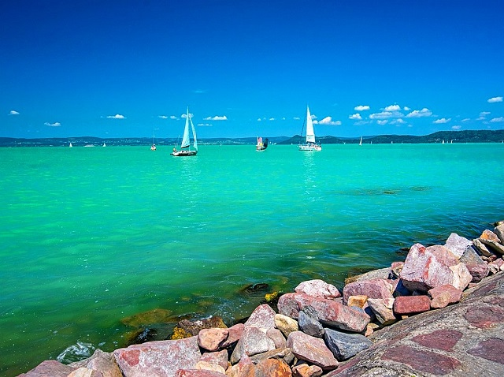
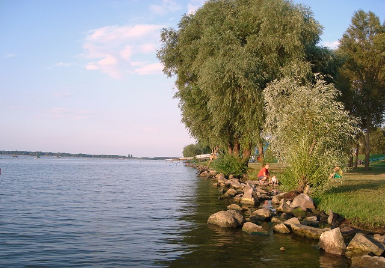
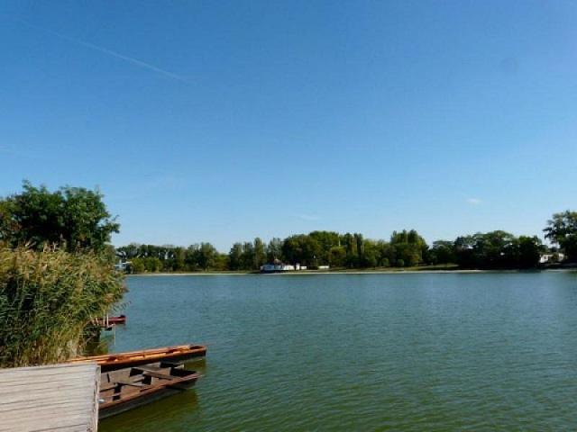

Balaton
A Balaton Magyarország legnagyobb tava, és az egyik legnépszerűbb nyári üdülőhely. A strandjai minden korosztály számára kellemes kikapcsolódást nyújtanak. A sekély, gyorsan felmelegedő víz különösen a kisgyermekes családok számára ideális. A déli part strandjai homokosabbak és lassan mélyülnek, míg az északi parton több a köves, kavicsos partszakasz. A Balaton partján számos jól felszerelt strand található, ahol büfék, csúszdák és sportolási lehetőségek várják a látogatókat. Nyáron sokan napoznak, úsznak vagy vízibicikliznek a tóban. A strandokon gyakran rendeznek programokat, koncerteket és sportversenyeket is. A naplemente a Balaton partján különösen szép látványt nyújt. A Balaton strandjai ezért minden évben rengeteg turistát vonzanak belföldről és külföldről egyaránt.
Tisza-tó
A Tisza-tó Magyarország második legnagyobb tava, amely kedvelt nyári üdülőhely. Strandjai tiszták és rendezettek, sok látogatót vonzanak minden évben. A tó vize nyáron gyorsan felmelegszik, ezért kellemes fürdőzést biztosít. A sekélyebb partszakaszok miatt a kisgyermekes családok számára is ideális választás. A strandokon büfék, játszóterek és sportolási lehetőségek is megtalálhatók. Sokan vízibicikliznek, kajakoznak vagy csónakáznak a tavon. A természet közelsége különleges hangulatot ad a pihenésnek. A környéken kerékpárutak is találhatók, így aktív kikapcsolódásra is van lehetőség. Nyáron különböző programokat és rendezvényeket is szerveznek a parton. A Tisza-tó strandjai ideális helyszínt biztosítanak a nyári feltöltődéshez.
Szelidi-tó
A Szelidi-tó Bács-Kiskun vármegyében található, és népszerű üdülőhely. A tó vize nyáron kellemesen meleg, ezért sokan választják strandolásra. A part mentén kiépített, gondozott strand várja a látogatókat. A sekély víz miatt a gyermekek számára is biztonságos fürdőzési lehetőséget nyújt. A strand területén büfék és pihenőhelyek is találhatók. A környék nyugodt és barátságos hangulatú. Nyáron kulturális és szórakoztató programokat is rendeznek itt. Sokan napoznak, úsznak vagy vízi sportokat próbálnak ki a tavon. A természet közelsége különleges élményt ad a látogatóknak. A Szelidi-tó strandja kiváló hely a nyári pihenéshez és kikapcsolódáshoz.